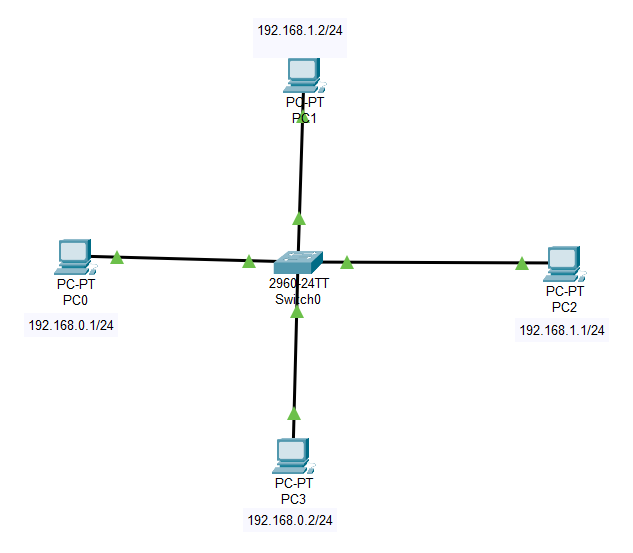

🎭 Máscara de rede
🗺️ Topologia da Rede
Utilizando o Cisco Packet Tracer, monte a rede abaixo:

📝 Configuração dos PCs conectados ao switch 2960
📋 Configuração dos Dispositivos:
| Dispositivo | Endereço IP | Máscara de Sub-rede | Rede |
|---|---|---|---|
| PC0 | 192.168.0.1 | 255.255.255.0 | 192.168.0.0/24 |
| PC1 | 192.168.1.2 | 255.255.255.0 | 192.168.1.0/24 |
| PC2 | 192.168.1.1 | 255.255.255.0 | 192.168.1.0/24 |
| PC3 | 192.168.0.2 | 255.255.255.0 | 192.168.2.0/24 |
📝 Orientações:
🔧 Montagem da Rede:
Conecte os dispositivos utilizando o cabo de rede apropriado para formar uma rede
Certifique-se de que todos os dispositivos estejam conectados a um switch (modelo 2960)
Configure os endereços IP conforme a tabela acima
Verifique se todas as conexões estão funcionando (luzes verdes nos cabos)
Adicionar Dispositivos
Arraste 4 PCs e 1 Switch 2960 para a área de trabalho do Packet Tracer
Conectar Cabos
Use cabos Copper Straight-Through para conectar todos os PCs ao switch
Configurar IPs
Em cada PC: Desktop → IP Configuration → Configure IP e máscara conforme a tabela
🧪 Testes de Conectividade
⚡ Ao final, deve-se testar a rede:
Verificar a conectividade entre os dispositivos usando o comando ping entre os PCs
Acesse: Desktop → Command Prompt em qualquer PC
Execute os comandos de ping conforme os testes abaixo
🔍 Teste 1: Ping entre PCs da mesma rede
No PC1, execute:
C:\> ping 192.168.1.2
(PC1 para PC2 - ambos na rede 192.168.1.0)
🔍 Teste 2: Ping entre PCs de redes diferentes
No PC1, execute:
C:\> ping 192.168.0.1
(PC1 para PC0 - redes diferentes: 192.168.1.0 e 192.168.0.0)
No PC3, execute:
C:\> ping 192.168.1.1
(PC3 para PC1 - redes diferentes: 192.168.2.0 e 192.168.1.0)
🤔 Questões para Reflexão:
1. Realize um ping entre os computadores de mesma rede e depois de redes diferentes: O que ocorre? Por quê?
2. Qual é o resultado do ping entre PC1 e PC2? Explique o motivo.
3. Qual é o resultado do ping entre PC1 e PC0? Explique o motivo.
4. Como a máscara de sub-rede 255.255.255.0 influencia na comunicação entre os dispositivos?
5. O que seria necessário para permitir comunicação entre redes diferentes?